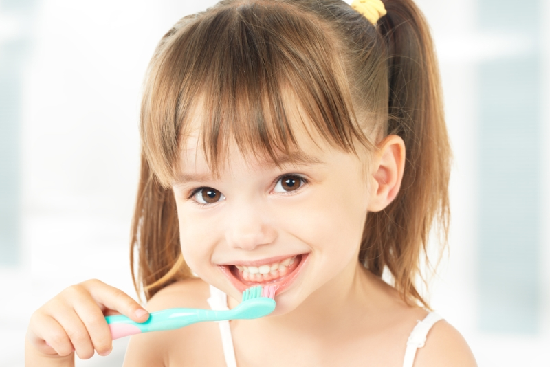

<!-- We don't need full layout here, because this page will be parsed with Ajax-->
<!-- Top Navbar-->

<div class="pages">
  <!-- Page, data-page contains page name-->
  <div data-page="about" class="page">
    <!-- Scrollable page content-->
    <div class="page-content">
      <div class="navbar">
  <div class="navbar-inner">
    <div class="left"><a href="#" class="back link"> <i class="icon icon-back"></i><span>العوده </span></a></div>
    <div class="center sliding">   </div>
    <div class="right">
       
      <!-- Right link contains only icon - additional "icon-only" class--><a href="#" class="link icon-only open-panel"> <i class="icon icon-bars"></i></a>
    </div>
  </div>
</div>
      <div class="content-block presentcon">
<div class="row">
  <div class="col-100">

  </div>
</div>

<div class="row t">
  <div class="col-100">
<h4>             طرق حماية أسنان طفلك من التسوس :</h4>
<ul><li>

 ينصح معظم الأطبّاء بتنظيم أوقات تناول الطعام لدى الأطفال ونوعية الطعام الذي يتناولونه. فالحلويات تؤذي الأسنان بطبيعة الحال وكذلك النشويات وتؤدّي إلى إزدياد حموضة الفم، أما الدهنيّات فتحمي الأسنان لأنّها تشكّل طبقة حماية لها وكذلك الأجبان.
</li>
<li> حددى عدد الوجبات الصغيرة التى يتناولها طفلك ليكون مثلا وجبة قبل الغداء وأخرى قبل العشاء مع الوضع فى الاعتبار أن تكون الأطعمة التى تتضمنها تلك الوجبات جبنة أو فواكه أو أطعمة أخرى صحية تساعد على أن تظل أسنان الطفل نظيفة بين الوجبات</li>
<li>الإهتمام المتواصل بالاسنان ومراقبتها لدى الطبيب الذي يلاحظ أي تغييرات قد تطرأ عليها، فيما الزيارات الدوريّة وحدها السبيل إلى حماية أسنان الأطفال </li>

</ul>
  </div>
</div>
   </div>
    </div>
  </div>
</div>